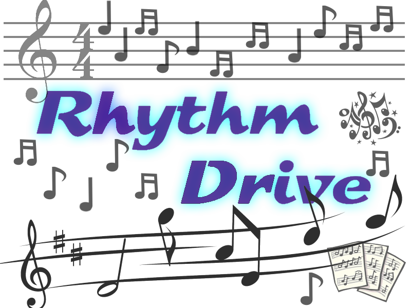

Tweetspace

Rhythm Drive
Tweetspace
January 2016
A program that retrieves specified tweets based on time and location, then performs sentiment analysis on them.
A hackathon project made in collaboration with David Zhang (Twitter API retrieval + backend, C#) and Jack Yan (Interface, ASP.net). I worked on natural language sentiment analysis using Python library nltk.
Rhythm Drive
May 2014
A basic guitar hero-rhythm game styled like osu! mania.
High school project with Gary Eng. Programmed in Java using Slick2D.